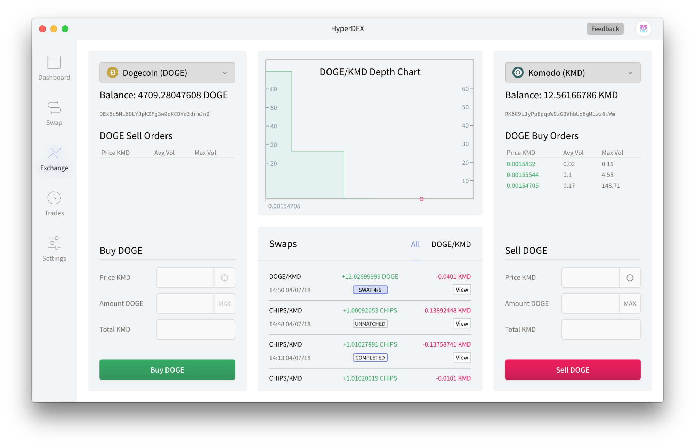
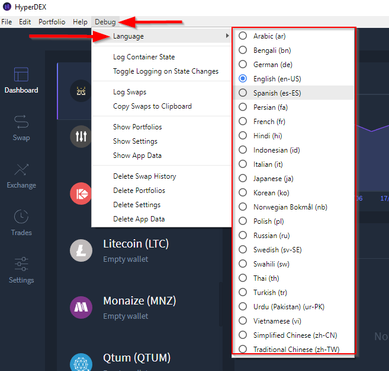
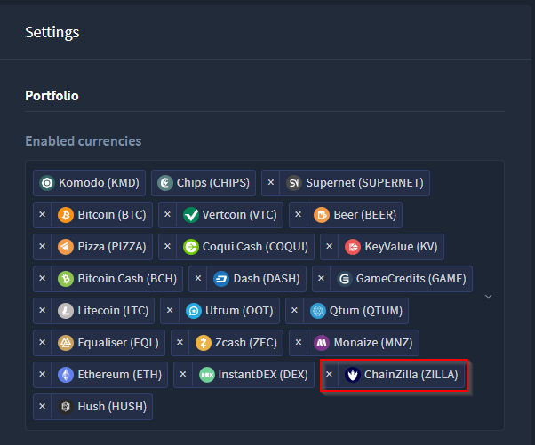
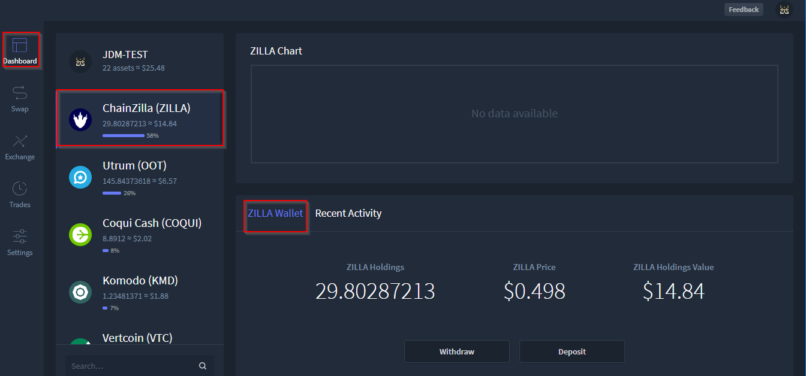
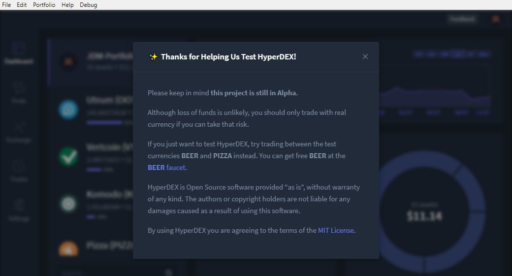

It uses your system language by default. Please let us know if the auto-detection is not working.
We're also looking for feedback on the translations. Report any mistakes or improvements to us on the Discord channel. Also, let us know if you want to help add additional languages or want to help maintain an existing language. You can find the translations here.
Languages:
- Arabic
- Bengali
- Chinese Simplified
- Chinese Traditional
- French
- German
- Hindi
- Indonesian
- Italian
- Japanese
- Korean
- Norwegian
- Persian
- Polish
- Russian
- Spanish
- Swahili
- Swedish
- Thai
- Turkish
- Urdu (Pakistan)
- Vietnamese
Languages can be accessed through Debug->Languages

SHASUMS256.txt.asc file) Commit details

